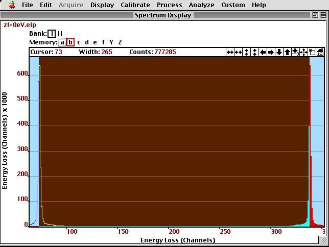

Chapter 4: Spectroscopy
Fit of Zero-Loss Peak¶

part of
MSE672: Introduction to Transmission Electron Microscopy
Spring 2026 by Gerd Duscher
Microscopy Facilities Institute of Advanced Materials & Manufacturing Materials Science & Engineering The University of Tennessee, Knoxville Background and methods to analysis and quantification of data acquired with transmission electron microscopes.
Background and methods to analysis and quantification of data acquired with transmission electron microscopes.
Content¶
The zero-loss peak in an EELS spectrum gives us two important infomations: * the origin of the energy-scale * the zero-loss peak is the resolution function of our spectrum
Often we need to subtract or know this resolution function very accurately for a precise analysis of EELS spectra.
The area under the peak gives us the number of electron that are not inelatically scattered, and in relation to the total count a measure for the thickness of the sample.
Energy Resolution and Zero-Loss Peak¶
The first peak in the Electron Energy Loss Spectrum (EELS) is the so called Zero-Loss peak. This zero-loss peak is formed by all the electrons that are
not scattered,
elastically scattered, and
quasi–elastically scattered.
We can use it as a measure of the energy resolution of the system.
This is called a response function in information theory.
The full width at half maximum (FWHM) of the Zero-Loss peak is what we usually declare as energy resolution in an EELS spectrum.
The energy resolution has three sources:
the energy spread of the electrons before they reach the specimen (\(\Delta E_0\)),
the energy spread that is added by quasi-elastic interactions with the specimen(\(\Delta E_{ph}\)),
the spectrometer resolution (\(\Delta E_{S_0}\)),
the energy dispersion (\(s/D\)).
These components usually treated as independent and summed up as squares of their values. The measured resolution \(\Delta\)E is given by:
\begin{equation} \Large \Delta{\rm E}^2 \approx \Delta E_0^2 + \Delta E_{S_0}^2 + (s/D)^2 \end{equation}
Please note that the quasi-elastic interactions are not added here and, therefore, I assume to go through the vacuum only.
Contribution of Electron Source
The energy spread before the sample \(\Delta\)E\(_0\) is the energy spread of the electron source broadened by the Boersch effect.
The energy spread of the source is a directly proportional to the temperature due to the Fermi–Dirac distribution.
The Boersch effect is an additional broadening caused by the Coulomb interaction of the electrons, and is therefore more pronounced in higher density electron beams.
Monochromators will select a part of the original energy spread and thus increase energy resolution. Contribution of Spectrometer
The spectrometer resolution \(\Delta\)E\(_{S0}\) is due to the aberration of the electron optics.
This aberration is worse for larger collection angles.
Aberration correctors will improve the spectrometer resolution.
Contribution of Detector
The spatial resolution of the electron detector \(s\) (equivalent to the width of the slid of a serial spectrometer) and the spectrometer dispersion \(D\) are the final contributions to the total energy resolution. Choices of Dispersion
A small energy dispersion will allow a high energy resolution\
A large energy dispersion enables to samples a large energy window
Load important packages¶
Check Installed Packages¶
[1]:
import sys
import importlib.metadata
def test_package(package_name):
"""Test if package exists and returns version or -1"""
try:
version = importlib.metadata.version(package_name)
except importlib.metadata.PackageNotFoundError:
version = '-1'
return version
if test_package('pyTEMlib') < '0.2026.1.0':
print('installing pyTEMlib')
!{sys.executable} -m pip install --upgrade pyTEMlib -q
print('done')
done
Import all relevant libraries¶
Please note that the EELS_tools package from pyTEMlib is essential.
[15]:
import sys
%matplotlib ipympl
if 'google.colab' in sys.modules:
from google.colab import output
from google.colab import drive
output.enable_custom_widget_manager()
import matplotlib.pylab as plt
import numpy as np
import scipy
import warnings
warnings.filterwarnings('ignore')
# Import libraries from the book
import pyTEMlib
# For archiving reasons it is a good idea to print the version numbers out at this point
print('pyTEM version: ',pyTEMlib.__version__)
pyTEM version: 0.2026.1.3
Load and plot a spectrum¶
please see Introduction to EELS for details
[16]:
# ---- Input ------
load_example = True
# -----------------
if not load_example:
if 'google.colab' in sys.modules:
drive.mount("/content/drive")
fileWidget = pyTEMlib.file_tools.FileWidget()
[17]:
# ---- Input ------
load_example = True
file_name = 'AL-DFoffset0.00.dm3'
# -----------------
if load_example:
if 'google.colab' in sys.modules:
if not os.path.exists('./'+file_name):
!wget https://github.com/gduscher/MSE672-Introduction-to-TEM/raw/main/example_data/AL-DFoffset0.00.dm3
else:
datasets = pyTEMlib.file_tools.open_file('../example_data/'+file_name)
eels_dataset = datasets['Channel_000']
else:
datasets = fileWidget.datasets
eels_dataset = fileWidget.selected_dataset
if eels_dataset.data_type.name != 'SPECTRUM':
print('We need an EELS spectrum for this notebook')
view = eels_dataset.plot()
frames: Number of frames
Important Parameters in an EELS spectrum¶
[18]:
eels_dataset.view_metadata()
experiment :
single_exposure_time : 0.1
exposure_time : 0.1
number_of_frames : 100
convergence_angle : 0.0
collection_angle : 0.0
microscope : Libra 200 MC
acceleration_voltage : 199990.28125
filename : ../example_data/AL-DFoffset0.00.dm3
Simple Zero-Loss Integration¶
The inelastic mean free path is hard to determine and depends on the effective collection angle (convolution of collection and convergence angle) and the acceleration voltage. None of these parameters are likely to be tabulated for your experimental set-up.
However, the relative thickness is a valuable parameter to judge your sample location and the validity of your spectrum.
In a good sample 70 to 90% of the electrons do not interact. The relative thickness \(t\) in terms of the inelatic mean free path (IMFP or \(\lambda\)) is given by:
with:
\(I_{total}\): total intensity of spectrum
\(I_{ZL}\): intensity of zero-loss peak
We first estimate the intensity of the zero-loss peak by a summation of the spectrum in a specific energy-loss range.
[23]:
spectrum = np.array(eels_dataset)
energy_scale = eels_dataset.energy_loss.values
offset = eels_dataset.energy_loss[0]
dispersion = eels_dataset.energy_loss.slope
start = int((-2-offset)/dispersion)
end = int((4-offset)/dispersion)
sumZL = sum(spectrum[start:end])
sumSpec = sum(spectrum)
print(f"Counts in zero-loss {sumZL:.0f} , total counts {sumSpec:.0f}")
print(f"{(sumSpec-sumZL)/sumSpec*100:.1f} % of spectrum interact with specimen")
tmfp = np.log(sumSpec/sumZL)
print ('Sample thickness in Multiple of the ')
print (f'thickness [IMFP]: {tmfp:.3f}')
Counts in zero-loss 4123429376 , total counts 4875536384
15.4 % of spectrum interact with specimen
Sample thickness in Multiple of the
thickness [IMFP]: 0.168
Fitting the Zero-Loss with a Gausian¶
While a Gaussian does not describe the shape of the zero-loss peak well, we will use it to determine the zero-loss peak position.
The energy resolution is best measured from the zero-loss without sample (through vacuum), because the quasi elastic scattering will result in a small but noticeable broadening of the zero-loss.
The maximum of the fitted Gaussian is then the origin of the energy scale.
[24]:
###
# This function is also in the eels_tools of pyTEMlib
def fix_energy_scale( spec, energy):
startx = np.argmax(spec)
end = startx+3
start = startx-3
for i in range(10):
if spec[startx-i]<0.3*spec[startx]:
start = startx-i
if spec[startx+i]<0.3*spec[startx]:
end = startx+i
if end-start<3:
end = startx+2
start = startx-2
x = np.array(energy[start:end])
y = np.array(spec[start:end]).copy()
y[np.nonzero(y<=0)] = 1e-12
def gauss(x, p): # p[0]==mean, p[1]= area p[2]==fwhm,
return p[1] * np.exp(-(x- p[0])**2/(2.0*( p[2]/2.3548)**2))
def errfunc(p, x, y):
err = (gauss(x, p)-y )/np.sqrt(y) # Distance to the target function
return err
p0 = [energy[startx],1000.0,1] # Inital guess is a normal distribution
p1, success = scipy.optimize.leastsq(errfunc, p0[:], args=(x, y))
fit_mu, area, FWHM = p1
return FWHM, fit_mu
[25]:
FWHM, fit_mu = fix_energy_scale(spectrum, energy_scale)
print(f'FWHM: {FWHM:.2f} eV , with shift of {fit_mu:.2f} eV')
FWHM: -0.18 eV , with shift of -0.13 eV
[26]:
# --- Input -----
Gap = 1
# ---------------
## energy range of fit
startx = int(abs(offset/dispersion ))+1 ## zero eV
widthx = int(abs(Gap /dispersion )) ## fit width
## We need 6 parameter to fit the resolution function
## and so at least 6 channels for the fit
if widthx*2 < 6:
Gap = 3*dispersion
widthx = 3
endx = int(startx+widthx)
startx = int(startx-widthx)
print('Fit of Zero Loss from channel ', startx, ' to ',endx)
print('Fit of Zero Loss from ', startx*dispersion+offset, 'eV to ',endx*dispersion+offset, 'eV')
# energy scale and spectrum in the fitting window
x = energy_scale[startx:endx]
y = np.array(spectrum[startx:endx]).flatten()
def gauss(x, p):
"""
Gaussian distribution
Input:
p: list or array p[0]=position, p[1]= area p[2]==fwhm,
x: energy axis
"""
p[2] = abs(p[2])
return p[1] * np.exp(-(x- p[0])**2/(2.0*( p[2]/2.3548)**2))
# Fit a Gaussian
y[np.nonzero(y<=0)] = 1e-12
p0 = [0,1000.0,1] # Inital guess is a normal distribution
errfunc = lambda p, x, y: (gauss(x, p) - y)/np.sqrt(y) # Distance to the target function
p1, success = scipy.optimize.leastsq(errfunc, p0[:], args=(x, y)) # The Fit
print(f'Zero-loss position was {p1[0]:.2f} eV')
energy_scale=energy_scale-p1[0]
print('Corrected energy axis')
p1[0]=0.0
Gauss = gauss(energy_scale,p1)
print(f'Width (FWHM) is {p1[2]:.2f} eV')
print(f'Probability is {sum(Gauss)/sumSpec*1e2:.2f} %')
tmfp = np.log(sumSpec/sum(Gauss))
print(f'Thickness is {tmfp:.3f} * IMFP')
err = (y - gauss(x, p1))/np.sqrt(y)
print ('Goodness of Fit: ' ,sum(err**2)/len(y)/sumSpec*1e2, '%')
abs(offset/dispersion )
start =int((-2-offset)/dispersion)
end = int((8-offset)/dispersion)
plt.figure()
plt.plot(energy_scale, spectrum/sumSpec*1e2,label='spectrum')
plt.plot(energy_scale, Gauss/sumSpec*1e2, label='Gaussian')
plt.plot(energy_scale, (spectrum-Gauss)/sumSpec*1e2, label='difference')
plt.legend()
plt.title (' Gauss Fit of Zero-Loss Peak')
plt.xlim(-4,4)
Izl = Gauss.sum()
Itotal = spectrum.sum()
tmfp = np.log(Itotal/Izl)
print('Sum of Gaussian: ', Izl)
print('Sum of Spectrum: ', Itotal)
print ('thickness [IMFP]: ', tmfp)
plt.ylabel('scattering probability [%]')
plt.xlabel('energy-loss [eV]');
Fit of Zero Loss from channel 131 to 229
Fit of Zero Loss from -0.9727127428128597 eV to 0.9996566188559655 eV
Zero-loss position was -0.13 eV
Corrected energy axis
Width (FWHM) is 0.20 eV
Probability is 79.14 %
Thickness is 0.234 * IMFP
Goodness of Fit: 2.6037514773555848 %
Sum of Gaussian: 3858665454.444083
Sum of Spectrum: 4.8755446e+09
thickness [IMFP]: 0.23391041960317832
In the above figure, we show a zero-loss peak fitted with a Gaussian.
zoom in so that you can see the zero-Loss only.
The zero–loss peak is about 8% high and you can read off the FWHM by going left and right where the zero-loss peak reaches 4%.
Therefore, the FWHM of this zero-loss peak is about 0.18 eV. This is obviously a high resolution spectrum.
Also, the shape of the zero-loss is not perfectly symmetric and the tails of the zero-loss peak extend far in both directions.
The position of the maximum of the zero-loss peak is used for calibrating the energy scale. The maximum indicates zero energy–loss.
Fitting the Zero-Loss with a Product of Two Lorentzians¶
To better describe the full shape we use the product of two Lorentzians.
Compare the residuals of the Gaussian and Lorentzian fit.
You will zoom in closely to see the difference between experimental and model zero-loss peak here.
[27]:
#################################################################
## fit Zero Loss peak with ZLfunct =
## = convolution of Gauss with a product of two Lorentzians
##################################################################
width = 30
startx = np.argmax(spectrum)
endx = startx+width
startx = startx-width
print (startx, endx, endx-startx)
x = np.array(energy_scale[startx:endx])
y = np.array(spectrum[startx:endx])
print(f"Energy range for fit of zero-loss: {energy_scale[startx]:.2f} to {energy_scale[endx]:.2f}")
#guess = [0.02, 8000000, 0.1, 0.2, 1000,0.2,0.5, 1000,-0.5,-1.3, 1.01,1.0]
guess = [ 0.2, 1000,0.2,0.2, 1000,0.2 ]
p0 = np.array(guess)
def ZL(p, y, x):
center1, amplitude1, width1, center2, amplitude2, width2 = p
err = (y - pyTEMlib.eels_tools.zero_loss_function(x, [center1, amplitude1, width1, center2, amplitude2, width2]))#/np.sqrt(y)
return err
pZL, lsq = scipy.optimize.leastsq(ZL, p0, args=(y, x), maxfev=2000)
print('Fit of a Product of two Lorentzians')
print('Positions: ',pZL[2],pZL[5], 'Distance: ',pZL[2]-pZL[5])
print('Width: ', pZL[0],pZL[3])
print('Areas: ', pZL[1],pZL[4])
center1, amplitude1, width1, center2, amplitude2, width2 = pZL
err = (y - pyTEMlib.eels_tools.zero_loss_function(x, [center1, amplitude1, width1, center2, amplitude2, width2]))/np.sqrt(np.abs(y))
print (f'Goodness of Fit: {sum(err**2)/len(y)/sumSpec*1e2:.5}%')
zLoss = pyTEMlib.eels_tools.zero_loss_function(energy_scale, [center1, amplitude1, width1, center2, amplitude2, width2])
143 203 60
Energy range for fit of zero-loss: -0.60 to 0.61
Fit of a Product of two Lorentzians
Positions: 0.2949903597791383 0.1917939365705815 Distance: 0.10319642320855679
Width: 0.03100508558615033 -0.01913085318602675
Areas: 21841.55779669922 21407.64644992665
Goodness of Fit: 0.0027237%
[28]:
fig = plt.figure()
plt.plot(energy_scale,spectrum/sumSpec*1e2 , label = 'spectrum')
plt.plot(energy_scale, zLoss/sumSpec*1e2, label ='resolution function')
plt.plot(energy_scale, (spectrum-zLoss)/sumSpec*1e2 , label = 'difference')
plt.title ('Lorentzian Product Fit of Zero-Loss Peak')
#plt.xlim(-5,5)
plt.hlines(0, energy_scale[0], energy_scale[-1],color = 'gray')
Izl = zLoss.sum()
Itotal = spectrum.sum()
tmfp = np.log(Itotal/Izl)
print(f'Sum of Zero-Loss: {Izl:.0f} counts')
print(f'Sum of Spectrum: {Itotal:.0f} counts')
print (f'thickness [IMFP]: {tmfp:.5f}')
Sum of Zero-Loss: 4083171197 counts
Sum of Spectrum: 4875544576 counts
thickness [IMFP]: 0.17736
Calibrating Energy Dispersion¶
The software controlling the spectrometer (or image filter) will allow you to select your energy dispersion.
The dispersion is set through the magnification within the spectrometer and each dispersion setting is internally a set of values for the lenses (quadrupoles).
This setting will only be accurate to about 10% which is not accurate enough to automatically rely on it.
Therefore, we usually calibrate the energy dispersion ourselves.
The drift tube high voltage power supply is reasonable accurate to do this dispersion calibration.
Practical Steps
We collect a zero–loss (preferably but not necessarily in vacuum) without applied drift tube voltage. The zero–loss should be at the right hand of the display.
Then we collect a zero–loss peak with applied drift tube voltage, so that the zero-loss peak is at the left side of the display.

We now measure the number of channels between the two zero-loss peaks (make sure that there is no other energy dispersion selected.
We divide the voltage by this number and get the accurate energy dispersion.
In the case of the spectrum in figure above it is 300 eV / 265 channels = 1.17 eV/channel.
The selected energy dispersion was 1.0 eV / channel.
Conclusion¶
We use a Gaussian fit to determine the zero energy channel and thus the origin of the energy-scale
We use a product of two Lorentzians to fit the zero-loss peak, we will use that fit as the resolution function for further analysis (everythin we measure is convoluted by that function).
Here we used the area under the zero-loss peak to determine the relative thickness ( a relative thickness of 0.3 * IMFP is considered ideal for most experiments)